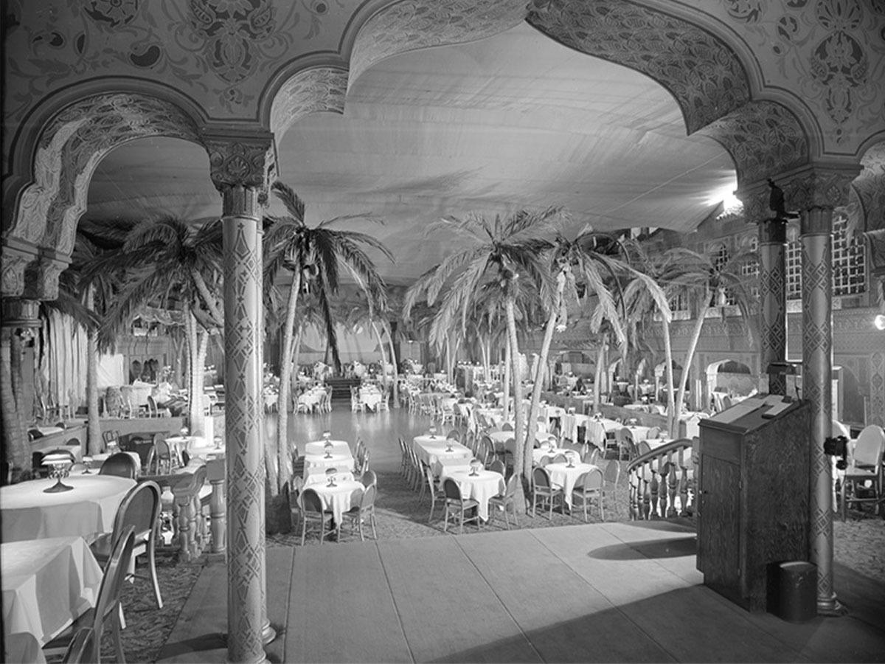
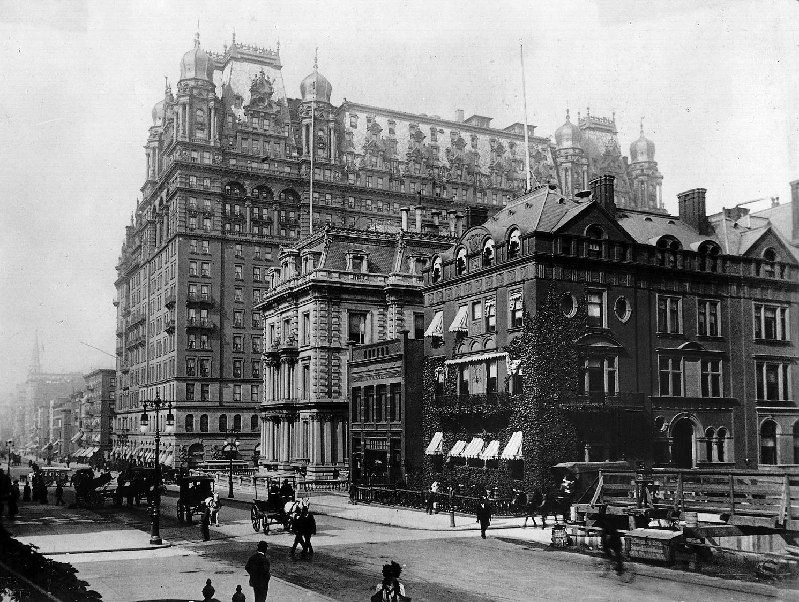
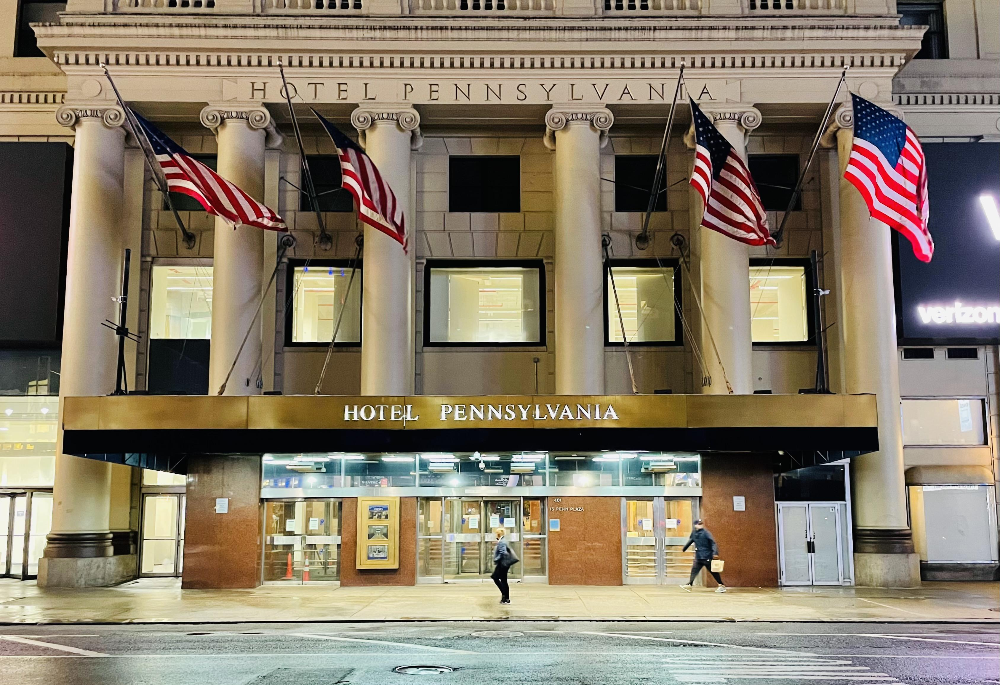
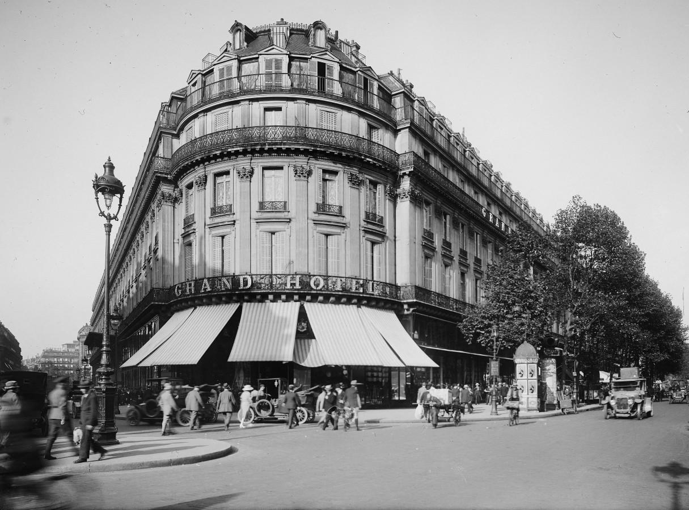
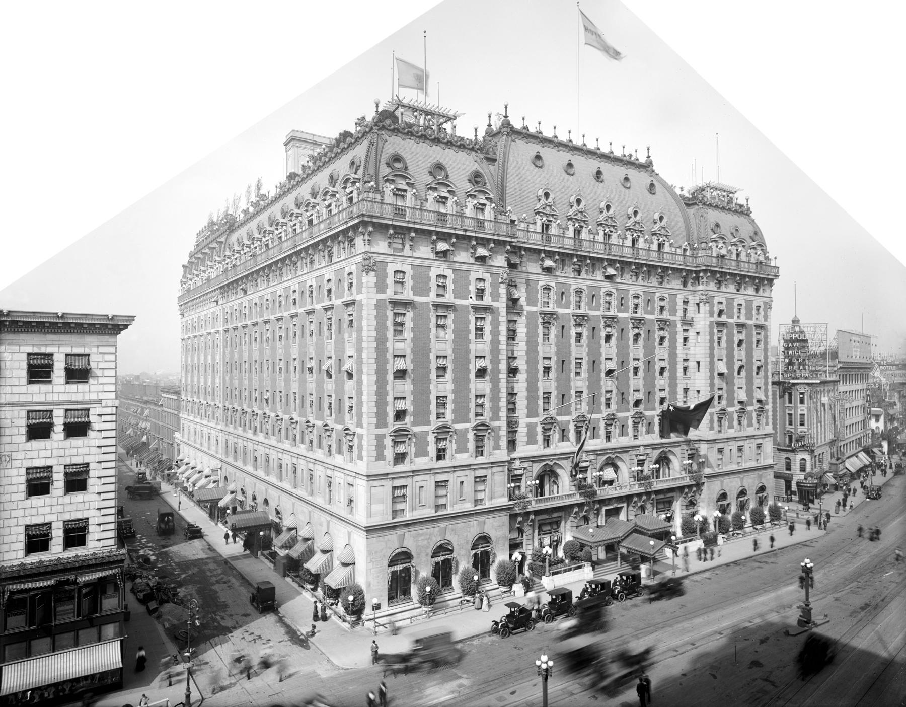

Forgotten Places, Unforgettable Stories
A great hotel is much more than bricks, marble, and elegant rooms. For a brief moment in history, it becomes part of people's lives. Writers finish novels there. Politicians negotiate the future. Movie stars celebrate success. Ordinary travelers create memories they never forget.
Eventually, many of these magnificent buildings disappear. Some are destroyed by war. Some fall victim to redevelopment. Others simply become too old for a rapidly changing world. Although their walls are gone, their stories continue to inspire us.
Ambassador Hotel

Hollywood's Lost Palace
On New Year's Day in 1921, Los Angeles welcomed a hotel unlike anything the city had ever seen. The Ambassador Hotel quickly became the center of Hollywood's glamorous social life. Movie stars arrived in chauffeur-driven automobiles. Famous directors discussed their next films over dinner. Presidents and foreign dignitaries checked into elegant suites while photographers waited outside. At the heart of the hotel stood the legendary Cocoanut Grove nightclub. Decorated with artificial palm trees, twinkling lights, and tropical décor, it became one of America's most celebrated entertainment venues. Frank Sinatra performed there. Judy Garland sang there. Charlie Chaplin attended parties there. Even the Academy Awards ceremony was held inside the hotel several times. For decades, the Ambassador represented Hollywood at its brightest. Then everything changed. Shortly after midnight on June 5, 1968, Senator Robert F. Kennedy celebrated his victory in California's Democratic presidential primary inside the Embassy Ballroom. Moments later, while walking through the hotel's kitchen pantry toward a press conference, he was shot. The tragedy shocked the world. Almost overnight, the Ambassador Hotel became associated not only with glamour but also with one of America's greatest political tragedies. Although the hotel remained open for many years afterward, its golden era had ended. Developers proposed new projects. Preservationists fought to save the building. Public opinion remained divided. Finally, in 2006, the Ambassador Hotel was demolished. Today a public school occupies the site. The famous ballroom has disappeared. The Cocoanut Grove is gone. But whenever old Hollywood is remembered, the Ambassador Hotel still appears at the center of the story.
The Original Waldorf Hotel

The Hotel That Disappeared for a Skyscraper
Some hotels become famous because of luxury. The Waldorf became famous because of family rivalry. In the late nineteenth century, William Waldorf Astor decided to build an enormous luxury hotel on the site of his family's mansion on Fifth Avenue. The decision deeply offended his aunt, Caroline Astor, the queen of New York society. What began as a personal dispute unexpectedly transformed the city forever. When the Waldorf Hotel opened in 1893, New Yorkers were astonished. Its grand dining rooms welcomed wealthy industrialists. European royalty stayed there. Diplomats, authors, musicians, and presidents all passed beneath its magnificent entrance. Soon another hotel, the Astoria, opened next door. Together they became the legendary Waldorf-Astoria, perhaps the most famous hotel in America. But New York is a city that constantly reinvents itself. By the late 1920s, Midtown Manhattan was rising upward rather than outward. Developers wanted something taller. Much taller. In 1929 the original Waldorf Hotel closed forever. Workers dismantled one of America's greatest hotels stone by stone. Within only a few years, another icon rose from exactly the same ground. The Empire State Building. Millions admire the skyscraper every year. Few realize that beneath its foundations once stood a hotel where an earlier generation dreamed of luxury. Sometimes history is not erased. It simply builds upward.
Hotel Pennsylvania

The Hotel That Refused to Be Forgotten
If New York had a front door during the twentieth century, it was Pennsylvania Station. And directly across the street stood the city's most welcoming neighbor—Hotel Pennsylvania. When the hotel opened in 1919, America was changing rapidly. Railroads connected the nation, immigration was transforming cities, and New York had become the destination for dreamers from around the world. The hotel was enormous. Thousands of guests could stay there at the same time. Business travelers hurried through its revolving doors each morning. Broadway performers celebrated opening nights nearby. Families arriving from small towns looked up in amazement at the city's towering skyline before checking into one of its many rooms. During World War II, soldiers passed through the hotel before departing overseas. Countless reunions and emotional farewells took place beneath its chandeliers. Its greatest claim to immortality came from an unexpected source. In 1940, the Glenn Miller Orchestra recorded "Pennsylvania 6-5000." The title was simply the hotel's telephone number. The catchy melody became one of the most recognizable swing songs ever recorded, ensuring that millions of people would remember a hotel they had never even visited. As air travel replaced train travel and neighboring buildings grew taller and more modern, Hotel Pennsylvania gradually lost its prestige. For years preservation groups fought to save it. Developers argued that the valuable Midtown site deserved a new future. In 2023, demolition was finally completed. Today the hotel is gone. Yet every time Glenn Miller's famous tune begins to play, the doors of Hotel Pennsylvania seem to open once again.
The Lost Grand Hotels of Paris

When Travel Was an Art
At the end of the nineteenth century, Paris represented the height of elegance. Travelers did not simply visit the city. They arrived to experience it. The grand hotels surrounding the Opera, the boulevards, and the great railway stations became magnificent stages where Europe's wealthy families, celebrated artists, ambitious writers, and adventurous travelers crossed paths. Guests dressed for dinner. String quartets played in glittering salons. Letters were written on fine stationery while horse-drawn carriages waited outside. For many visitors, the hotel itself became as memorable as the city beyond its doors. Then the twentieth century arrived. War reshaped Europe. Economic hardship changed lifestyles. Modern buildings replaced old neighborhoods. Some legendary hotels disappeared completely. Others survived only behind altered facades, converted into offices, apartments, or department stores. The names faded from guidebooks. Their stories slowly slipped into forgotten archives and postcards. Although many of these magnificent buildings no longer stand, they remind us that travel was once measured not by speed, but by experience. Their greatest luxury was not marble or crystal chandeliers. It was time.
Hotel Astor

The Brightest Lights on Broadway
When Hotel Astor opened in Times Square in 1904, electric lights still felt like magic. Visitors gathered each evening simply to admire Broadway's brilliant signs and lively streets. Standing proudly at the center of it all, Hotel Astor became one of New York's most fashionable destinations. Actors celebrated successful opening nights there. Politicians hosted lavish banquets. Writers observed the colorful parade of city life from its windows. Its grand ballroom welcomed charity events, elegant dances, and unforgettable New Year's Eve celebrations. The hotel became part of Broadway itself. If someone wished to experience glamorous New York, Hotel Astor was where the evening often began. But cities never stop changing. As automobiles replaced horse-drawn carriages, skyscrapers rose higher, theaters evolved, and Times Square became more commercial than elegant. The graceful world that Hotel Astor represented slowly disappeared. In 1967, the building was demolished. Today, thousands of visitors pass the location every day. Most never realize they are walking across the ground where one of Broadway's greatest hotels once stood. The lights remain. The crowds remain. Only the hotel has vanished.